Decision Trees
A decision tree is a supervised classification method that predicts a label by asking a sequence of yes-or-no questions about the features, branching down to a leaf that holds the prediction. Here it is asked to predict the season a sighting happened in, using only where it was and how many birds were counted, never when.
OverviewWhat a decision tree is. Every internal node of the tree is a test on one feature, every leaf is a prediction (the majority class among the training rows that land there), and the tree is built recursively: start with all the training rows at the root, pick the single best question to split them with, then repeat on each resulting group. To classify a new sighting, drop it in at the root and follow the answers down to a leaf.
Measuring impurity: Gini and entropy. A good split makes its children more pure, meaning closer to holding just one class. Two common ways to score how mixed a node is, from its class proportions p1,...,pK, are Gini impurity, G = 1 - ∑pk2, and entropy, H = -∑pk log2(pk). Both are 0 for a pure node and both are at their largest for an evenly mixed node; for two classes split 50/50 that is G = 0.5 and H = 1 bit. In practice the two measures tend to agree on which split is best, which scikit-learn's default (Gini) and the code below's comparison both bear out.
Information gain. A candidate split is scored by how much impurity it removes: Gain = impurity(parent) - the size-weighted average of impurity(child) across the children it creates. At each node, the tree tries every feature and, for a numeric feature, every candidate threshold between neighboring sorted values, computes the gain each would produce, and keeps the largest. A worked example using the project's own data appears in Results below, after the tree has actually been fit.
Why depth has to be controlled. Nothing stops a tree from splitting until every leaf is pure, which for real data usually means one or a few points per leaf and zero training error, a tree that has memorized the noise rather than learned the signal. Depth is the knob that trades this off: a shallow tree can underfit, while an unrestricted tree chases individual data points and does not generalize. The standard fix is pruning, either pre-pruning (stopping early with a rule such as a maximum depth) or post-pruning (growing the full tree, then cutting back branches that do not improve held-out performance); the Results below use pre-pruning by capping max_depth.
Why there are effectively infinitely many possible trees. For a numeric feature, a split threshold can sit anywhere between two neighboring data values, so even one feature offers a continuum of candidate cut points, not a handful of fixed options. Stack that with every possible choice of which feature to split on at every node, how deep to let the tree grow, and which stopping rule to use, and the number of trees that could be fit to the same data is enormous, for most practical purposes unbounded. That same sensitivity is also why a single tree is considered unstable: a small change in the training rows can shift which split looks best at the root and cascade into a differently shaped tree below it.

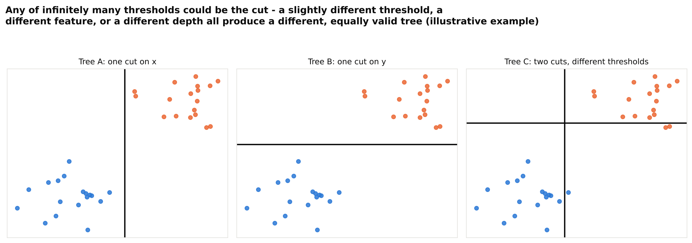
code/08_concept_diagrams2.py has been run.
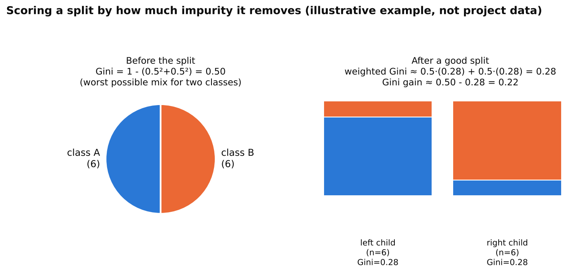
code/08_concept_diagrams2.py has been run.Each of the 167,678 cleaned sightings carries a season label (winter, spring, summer, fall) assigned from its month, and the tree below is trained to predict that label from three numeric features only: lat_norm, lon_norm, and log10_count. The date itself is deliberately left out of the feature list, since handing the model the month, day of year, or week would make predicting season from it trivial rather than meaningful. A single stratified 80/20 split, built with scikit-learn's train_test_split (stratified on season so all four classes keep roughly their original proportions in both pieces) and saved to nb_dt_train.csv and nb_dt_test.csv, gives 134,142 training rows and 33,536 disjoint testing rows. Disjoint means every row lands in exactly one of the two sets, never both, which matters because a model tested on rows it already trained on would look far more accurate than it really is.

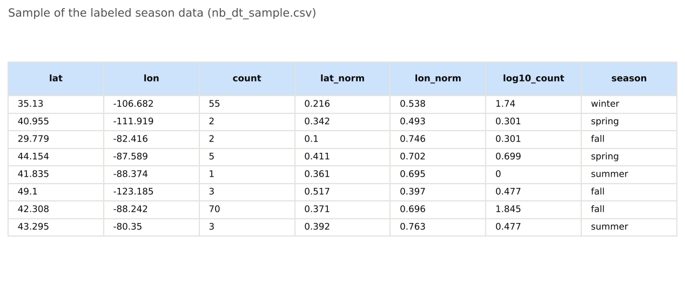
code/07_decision_trees.py has been run.
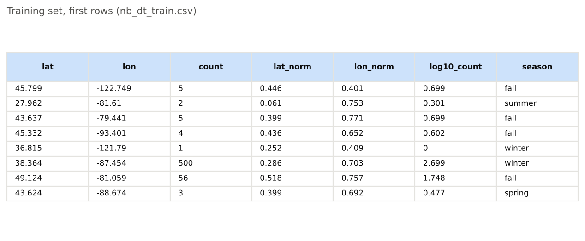
code/07_decision_trees.py has been run.
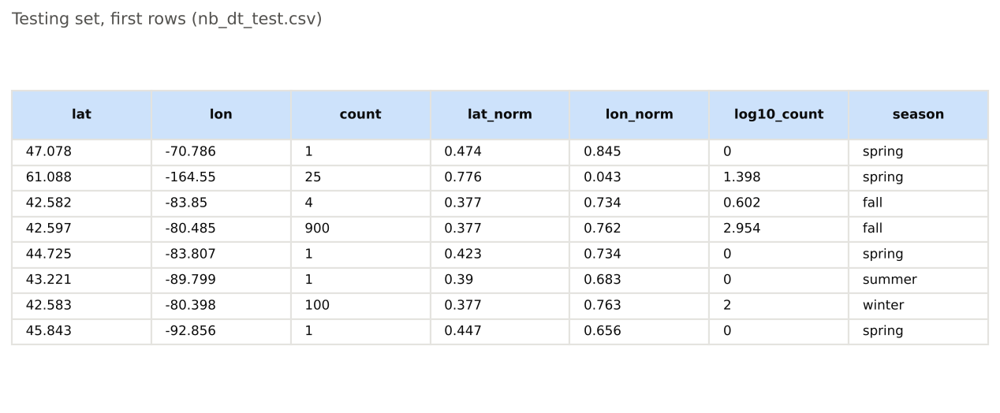
code/07_decision_trees.py has been run.Written in Python with pandas, scikit-learn (DecisionTreeClassifier, plot_tree, confusion_matrix), and matplotlib. Full code: code/07_decision_trees.py (the overview diagrams above come from code/08_concept_diagrams2.py).
Choosing a depth. Test accuracy was tracked across every max_depth from 1 to 30. The raw peak sits at depth 26 (55.6% test accuracy), but by then the tree has grown 34,042 leaves and its training accuracy (81.7%) has pulled far ahead of its test accuracy, the signature of memorizing individual sightings rather than learning general rules; that gap is exactly the overfitting the Overview describes, and the same caution applies to any search like this one: a raw peak sitting right at the edge of the range tested should not be trusted at face value, since it may just mean the range was not searched far enough. Restricting the search to a practical depth of 12 or less, deep enough to still look like an explainable set of rules, gives a best depth of 12, with 53.2% test accuracy and a much smaller gap to its 56.5% training accuracy.

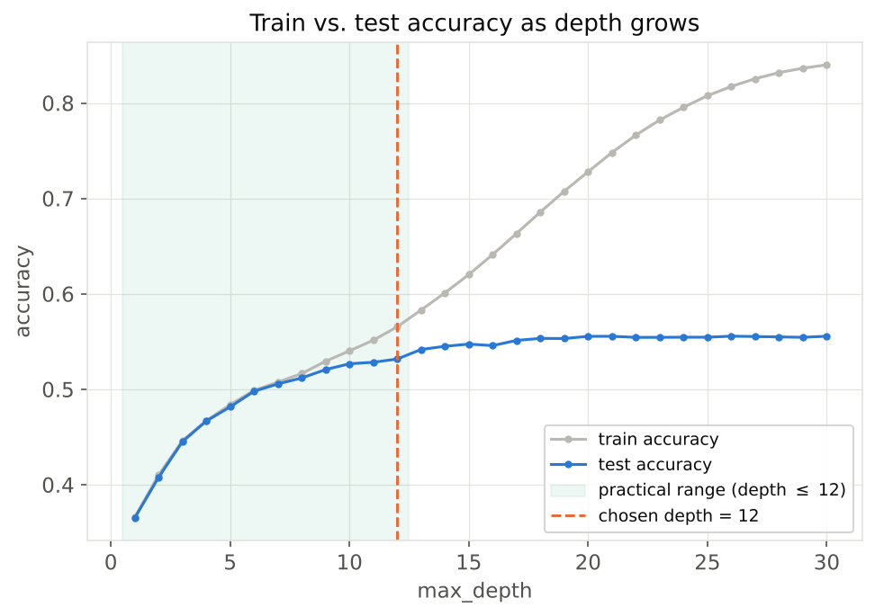
code/07_decision_trees.py has been run.Three trees. Trees 1 and 2 use the same shallow max_depth=2 limit with different impurity measures, Gini and entropy, to compare them directly; both reach identical root and second-level splits and the same 40.8% test accuracy, matching the Overview's point that the two measures usually agree. Tree 3 uses the practical best depth of 12 (Gini); only its top three levels are shown below for readability, but its full 53.2% test accuracy comes from all 12 levels.

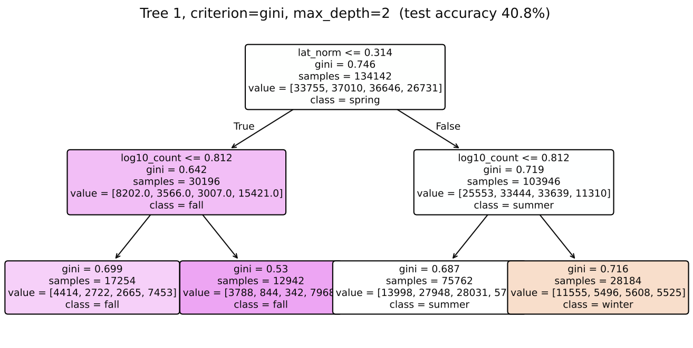
code/07_decision_trees.py has been run.
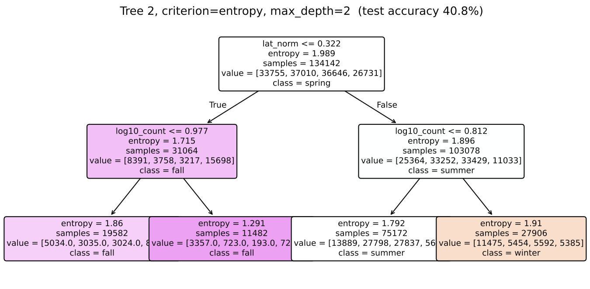
code/07_decision_trees.py has been run.
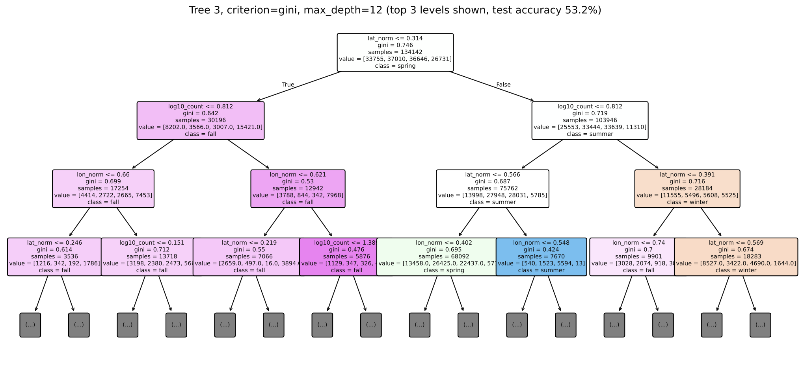
code/07_decision_trees.py has been run.A worked example from this project's own root split. Tree 1's root splits on lat_norm ≤ 0.314 (roughly the 36th parallel, separating the southern wintering range from everything farther north). Before the split, the parent node's 134,142 training rows have Gini impurity 0.746 and entropy 1.989 bits. The split sends 30,196 rows left (Gini 0.642) and 103,946 rows right (Gini 0.719), for a size-weighted Gini gain of 0.746 - [(30,196/134,142)×0.642 + (103,946/134,142)×0.719] = 0.044. By entropy the same split removes 0.134 bits (1.989 down to a weighted 1.855). Both measures agree the split is worth making, and scikit-learn's own recorded impurity at these three nodes (0.746, 0.642, 0.699 at depth 2) matches this by-hand calculation.
Feature importance and confusion matrix. In the practical-depth tree, latitude drives about half of the total impurity reduction (50.2%), longitude about three-tenths (30.5%), and flock size the rest (19.3%), confirming that location, especially how far north or south a sighting was, is what lets a tree separate seasons at all without being told the date.

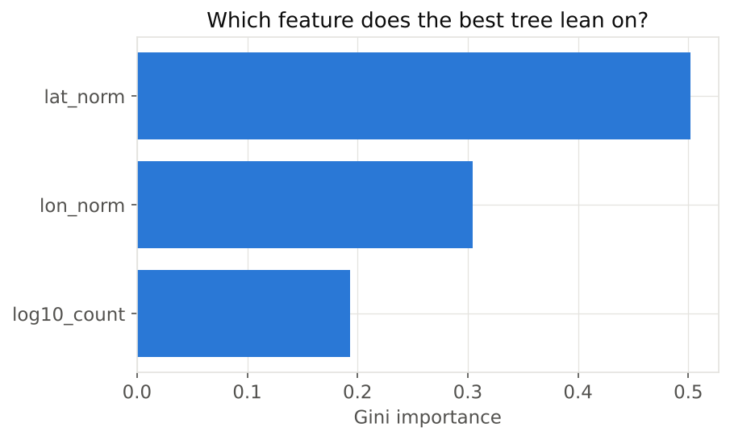
code/07_decision_trees.py has been run.
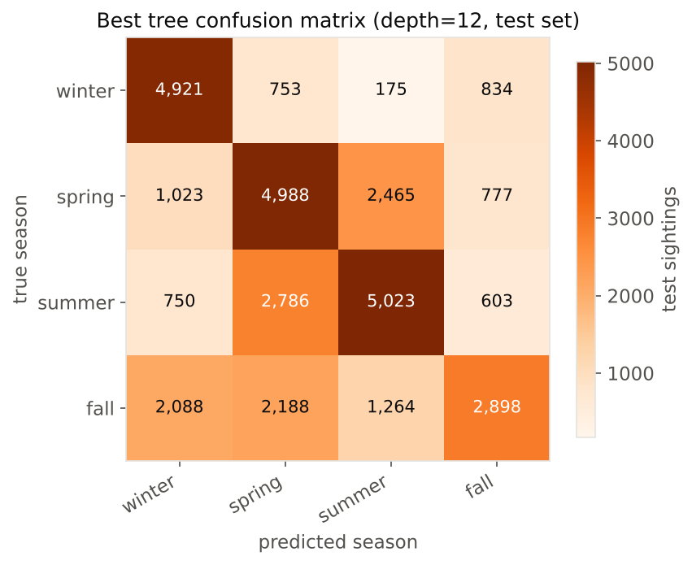
code/07_decision_trees.py has been run.Two results stand out. First, the tree recovers winter sightings correctly 73.6% of the time, by far its strongest season, against a 53.2% overall test accuracy. That winter result comes from being able to carve out an explicit rectangular region in latitude-longitude-flock-size space for the southern wintering range, rather than weighing each feature independently: winter really is defined by a specific combination of being far enough south and showing up in particular counts, and a tree's branching structure is well suited to catching exactly that kind of combined condition. Second, depth has to be controlled on purpose: the raw best test accuracy keeps inching up past the practical range tested here, but only by growing tens of thousands of leaves and opening a widening gap between train and test accuracy, the signature of memorizing individual sightings rather than learning a generalizable rule, so the tree used throughout Results deliberately trades a few points of accuracy for one that still reads as an explainable set of rules. That a single setting like depth can reshape the whole tree this much is a reminder that one tree is only ever one particular, somewhat arbitrary answer among many that could have been fit to the same rows.